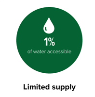

Water: A life-giving resource, out of balance

Water scarcity
Water use has been growing at more than twice the rate of population increase in the past century — to the point that now about 2.1 billion people lack access to safe drinking water; another 4.5 billion lack access to safely managed sanitation. Further, as climate change alters weather patterns, areas such as the Mediterranean region and southern Africa may face reduced rainfall — placing the 1 billion people who live in these already dry regions at risk of increased water scarcity.
Forest to faucet
For people in more than one-third of the world’s largest cities — including Jakarta, Bogotá and Mexico City — clean water starts in protected forests, where water is captured, stored and purified. Rivers, lakes and irrigation systems stay filled only when those upstream trees are left standing — but deforestation and land-use conversion from forest to agriculture and development pose serious threats to critical watersheds around the world, reducing the supply of water for millions of people.

Limited supply
Our pale blue dot seems covered in abundant water — but of all that blue, only 3% is fresh, and of that, only 1% is found in accessible lakes, rivers and underground sources; the rest is frozen or too deep underground for humans to reach. As the global population grows, so does demand for fresh water. Many water systems around the world have already collapsed — and according to one estimate, by 2030 the global demand for water will outstrip supply by 40%.
Waging war over water is not the only option
Conservation International works to protect the places around the world that people rely on most for fresh water. From Peru to Madagascar to Colombia, we connect water providers with water users, offering financial incentives for people to keep the forests that filter fresh water standing and rivers clean. In Southeast Asia, where hydropower and agricultural development threaten to destabilize a critical freshwater ecosystem that millions depend on for food and income, we work with partners to establish more sustainable options. All of these projects start with sound science and offer innovative solutions that can serve as models for freshwater conservation anywhere on Earth — so we can increase access to clean water for all.
SOURCE: CONSERVATION INTERNATIONAL